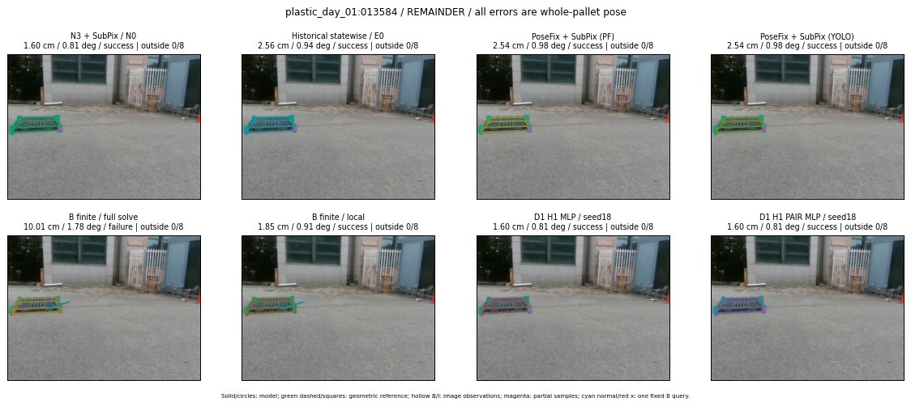

Whole-pallet pose errors; reference is a fixed geometric annotation, not certified physical GT.

Scores are uncalibrated logits. N0 retention is a numerical pose alias; it differs from H0 none or B fallback. B/I and profiles in baseline/B panels are original observations; L panels use new D1 observations. Only one deterministic supported B query is shown in a thumbnail; full support counts are below. Grey privacy rectangles edit the display copy only and are unrelated to O states; all observations were measured on original pixels. Thumbnails use JPEG quality85; detailed scientific panels are PNG.
| Method | Whole pose / cm, deg | Actual source | Selected ID | Score | Archived candidates | Eligible | N0 retained | H0 none | Fallback | Finite profiles |
|---|---|---|---|---|---|---|---|---|---|---|
| Raw YOLO + F | 14.20 cm / 0.59 deg / failure | OTHER | None | N/A | N/A | N/A | False | N/A | None | N/A |
| N3 + SubPix / N0 | 1.60 cm / 0.81 deg / success | N0 | None | N/A | N/A | N/A | True | N/A | None | N/A |
| Historical statewise / E0 | 2.56 cm / 0.94 deg / success | E0_REGENERATED | None | N/A | N/A | N/A | False | N/A | False | N/A |
| PoseFix raw | 9.32 cm / 0.78 deg / failure | OTHER | None | N/A | N/A | N/A | False | N/A | None | N/A |
| PoseFix + SubPix (PF) | 2.54 cm / 0.98 deg / success | OTHER | None | N/A | N/A | N/A | False | N/A | False | historical support records 9; finite audit N/A |
| PoseFix + SubPix (YOLO) | 2.54 cm / 0.98 deg / success | OTHER | None | N/A | N/A | N/A | False | N/A | False | historical support records 9; finite audit N/A |
| Historical L, seed18 | 1.60 cm / 0.81 deg / success | N0 | N0 | N/A | 72 | 72 | True | True | True | N/A |
| Historical B fixed bank | 4.75 cm / 0.92 deg / success | OTHER | G10/ORIGINAL_WD/sample/2 | N/A | N/A | N/A | False | N/A | False | N/A |
| Historical B full | 10.01 cm / 1.78 deg / failure | OTHER | NEW/B/ORIGINAL_WD/h0/G13/ORIGINAL_WD/sample/0/PROPOSED_NATIVE_YAW_0 | N/A | N/A | N/A | False | N/A | False | N/A |
| Historical edge full | 191.64 cm / 7.64 deg / failure | OTHER | NEW/edge/ORIGINAL_WD/h0/G13/ORIGINAL_WD/sample/0/PROPOSED_NATIVE_YAW_0 | N/A | N/A | N/A | False | N/A | False | N/A |
| Historical AB full | 10.01 cm / 1.78 deg / failure | OTHER | NEW/AB/ORIGINAL_WD/h0/G13/ORIGINAL_WD/sample/0/PROPOSED_NATIVE_YAW_0 | N/A | N/A | N/A | False | N/A | False | N/A |
| B finite / fixed bank | 4.75 cm / 0.92 deg / success | OTHER | G10/ORIGINAL_WD/sample/2 | N/A | N/A | N/A | False | N/A | False | 23/23 |
| B finite / full solve | 10.01 cm / 1.78 deg / failure | OTHER | NEW_FINITE/B/ORIGINAL_WD/h0/G13/ORIGINAL_WD/sample/0/PROPOSED_NATIVE_YAW_0 | N/A | N/A | N/A | False | N/A | False | 23/23 |
| B finite / local | 1.85 cm / 0.91 deg / success | OTHER | NEW_FINITE/B/ORIGINAL_WD/h0/N0_LOCAL_SAME_PHYSICAL_POSE/ORIGINAL_WD | N/A | N/A | N/A | False | N/A | False | 23/23 |
| Edge finite / full solve | 165.73 cm / 85.94 deg / failure | OTHER | NEW_FINITE/edge/SWAPPED_WD/h0/G13/SWAPPED_WD/sample/0/PROPOSED_NATIVE_YAW_0 | N/A | N/A | N/A | False | N/A | False | 23/23 |
| D0 H0 MLP / seed18 | 1.60 cm / 0.81 deg / success | N0 | N0 | 3.632525682449341 | 38 | 38 | True | True | True | N/A |
| D0 H0 MLP / seed19 | 1.60 cm / 0.81 deg / success | N0 | N0 | 4.372937202453613 | 38 | 38 | True | True | True | N/A |
| D0 H0 MLP / seed20 | 1.60 cm / 0.81 deg / success | N0 | N0 | 2.3500943183898926 | 38 | 38 | True | True | True | N/A |
| D0 H1 MLP / seed18 | 1.60 cm / 0.81 deg / success | N0 | N0 | -0.608406126499176 | 38 | 38 | True | False | False | N/A |
| D0 H1 MLP / seed19 | 1.60 cm / 0.81 deg / success | N0 | N0 | -0.40969139337539673 | 38 | 38 | True | False | False | N/A |
| D0 H1 MLP / seed20 | 1.60 cm / 0.81 deg / success | N0 | N0 | -1.432274580001831 | 38 | 38 | True | False | False | N/A |
| D1 H0 MLP / seed18 | 1.60 cm / 0.81 deg / success | N0 | N0 | 7.225658416748047 | 38 | 38 | True | True | True | N/A |
| D1 H0 MLP / seed19 | 1.60 cm / 0.81 deg / success | N0 | N0 | 7.650476932525635 | 38 | 38 | True | True | True | N/A |
| D1 H0 MLP / seed20 | 1.60 cm / 0.81 deg / success | N0 | N0 | 7.067050933837891 | 38 | 38 | True | True | True | N/A |
| D1 H1 MLP / seed18 | 1.60 cm / 0.81 deg / success | N0 | N0 | 0.824241042137146 | 38 | 38 | True | False | False | N/A |
| D1 H1 MLP / seed19 | 1.60 cm / 0.81 deg / success | N0 | N0 | 0.7173348069190979 | 38 | 38 | True | False | False | N/A |
| D1 H1 MLP / seed20 | 1.60 cm / 0.81 deg / success | N0 | N0 | 0.4058719575405121 | 38 | 38 | True | False | False | N/A |
| D1 H1 ROLE AFFINE / seed18 | 4.75 cm / 0.92 deg / success | OTHER | P1/ORIGINAL_WD/selected | 0.9074573516845703 | 38 | 38 | False | False | False | N/A |
| D1 H1 ROLE AFFINE / seed19 | 4.75 cm / 0.92 deg / success | OTHER | P1/ORIGINAL_WD/selected | 0.05126632750034332 | 38 | 38 | False | False | False | N/A |
| D1 H1 ROLE AFFINE / seed20 | 4.75 cm / 0.92 deg / success | OTHER | P1/ORIGINAL_WD/selected | 0.7639426589012146 | 38 | 38 | False | False | False | N/A |
| D1 H1 PAIR MLP / seed18 | 1.60 cm / 0.81 deg / success | N0 | N0 | 0.017314419150352478 | 38 | 2 | True | False | False | N/A |
| D1 H1 PAIR MLP / seed19 | 1.60 cm / 0.81 deg / success | N0 | N0 | 0.2693327069282532 | 38 | 2 | True | False | False | N/A |
| D1 H1 PAIR MLP / seed20 | 1.60 cm / 0.81 deg / success | N0 | N0 | 0.7709457874298096 | 38 | 2 | True | False | False | N/A |
| D1 H1 PAIR ROLE AFFINE / seed18 | 2.56 cm / 0.94 deg / success | E0_REGENERATED | E0_REGENERATED | 0.7165593504905701 | 38 | 2 | False | False | False | N/A |
| D1 H1 PAIR ROLE AFFINE / seed19 | 2.56 cm / 0.94 deg / success | E0_REGENERATED | E0_REGENERATED | 0.5644258260726929 | 38 | 2 | False | False | False | N/A |
| D1 H1 PAIR ROLE AFFINE / seed20 | 2.56 cm / 0.94 deg / success | E0_REGENERATED | E0_REGENERATED | 0.5673727989196777 | 38 | 2 | False | False | False | N/A |
| Regenerated common E0 | 2.56 cm / 0.94 deg / success | E0_REGENERATED | E0_REGENERATED | N/A | N/A | N/A | False | N/A | False | N/A |